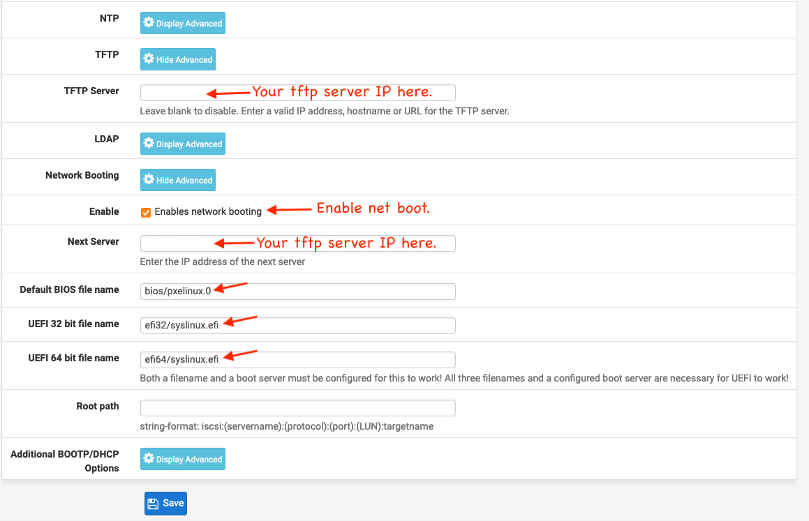

Pxe boot (BIOS & UEFI)

This post is not meant to be a complete HOWTO article on setting up a complete network boot environment, but more of a reminder for myself as to the things I had to do to get this working on my network. If this winds up helping someone else then that is just the “icing on the cake” as they say.
I wanted to learn more about PXE booting before getting started with Ubuntu MASS. I did this to have a better understanding of the underlying technologies. My ultimate goal is to autoinstall Ubuntu Server on Bare Metal (HP-T620’s) for my home lab Kubernetes cluster Ansbile deployment. I wanted a way to auto install everything from bare metal to the K8’s pods so I could “refresh” the cluster at anytime after I messed something up while learning clustered K8s.
I thought about using one of my many Raspberry Pi’s as my PXE boot server, but in the end I had already built a small HP EliteDesk running Ubuntu 20.04 to mirror the Ubuntu package repositories so that I could cut down on my internet data usage, so I used that machine instead.
On my network, the PXE boot functions are split between two machines. The first is my router that runs Pfsense and the second is the apt-mirror machine I mentioned earlier.
Hosts and function:
- pfsense : DHCP, DNS
- apt-mirror: TFTP, HTTP
TFTP config
Prep the system
tftpd-hpa is the tftp service, pxelinux is a bootloader member of the syslinux family, and is built for the PXE environment, the syslinux-efi package contains libraries needed to support EFI clients.
# become root on your TFTP server
sudo su
apt install syslinux-common syslinux-efi pxelinux tftpd-hpa
mkdir -p /tftpboot/{bios,efi32,efi64,boot,iso,pxelinux.cfg}
cd /tftpboot
ln -rs pxelinux.cfg bios && ln -rs pxelinux.cfg efi32 && ln -rs pxelinux.cfg efi64
ln -rs boot bios && ln -rs boot efi32 && ln -rs boot efi64
# BIOS files
cp /usr/lib/syslinux/modules/bios/{ldlinux,vesamenu,libcom32,libutil}.c32 /tftpboot/bios
cp /usr/lib/PXELINUX/pxelinux.0 /tftpboot/bios
# UEFI-32 files
cp /usr/lib/syslinux/modules/efi32/ldlinux.e32 /tftpboot/efi32
cp /usr/lib/syslinux/modules/efi32/{vesamenu,libcom32,libutil}.c32 /tftpboot/efi32
cp /usr/lib/SYSLINUX.EFI/efi32/syslinux.efi /tftpboot/efi32
# UEFI-64 files
cp /usr/lib/syslinux/modules/efi64/ldlinux.e64 /tftpboot/efi64
cp /usr/lib/syslinux/modules/efi64/{vesamenu,libcom32,libutil}.c32 /tftpboot/efi64
cp /usr/lib/SYSLINUX.EFI/efi64/syslinux.efi /tftpboot/efi64
# confirm port 69 is ALLOWED on local firewall
ufw status
# if ufw (micro firewall) is active and 69 is not allowed then:
# ufw allow 69
# tree view of tftpboot folder contents:
tftpboot
├── bios
│ ├── codewall.png
│ ├── ldlinux.c32
│ ├── libcom32.c32
│ ├── libutil.c32
│ ├── pxelinux.0
│ ├── pxelinux.cfg -> ../pxelinux.cfg
│ └── vesamenu.c32
├── boot
│ ├── ...
├── efi32
│ ├── codewall.png
│ ├── ldlinux.e32
│ ├── libcom32.c32
│ ├── libutil.c32
│ ├── pxelinux.cfg -> ../pxelinux.cfg
│ ├── syslinux.efi
│ └── vesamenu.c32
├── efi64
│ ├── codewall.png
│ ├── grub.cfg
│ ├── ldlinux.e64
│ ├── libcom32.c32
│ ├── libutil.c32
│ ├── pxelinux.cfg -> ../pxelinux.cfg
│ ├── syslinux.efi
│ └── vesamenu.c32
├── iso
│ ├── ...
└── pxelinux.cfg
└── default
NOTE: I have set a menu background “codewall.png” that I modified 3 copies of. Each image has been edited to show one of “BIOS, EFI-32, EFI-64” as part of the background, so that I know which boot dir was chosen by DHCP during the PXE boot process. (Just because I wanted to know how each system booted.)
TFTPD config
sudo nano /etc/default/tftpd-hpa
# FILE: /etc/default/tftpd-hpa
TFTP_USERNAME="tftp"
TFTP_DIRECTORY="/tftpboot"
TFTP_ADDRESS="0.0.0.0:69"
TFTP_OPTIONS="--secure"
sudo systemctl restart tftpd-hpa
HTTP config
install Apache HTTP server
sudo apt install apache2
edit the config file
nano /etc/apache2/sites-available/000-default.conf
# add this to the VirtualHost config:
Alias "/tftp" "/tftpboot"
<Directory "/tftpboot">
Options +Indexes
Order allow,deny
Allow from all
Require all granted
</Directory>
DHCP server config
I use pfsense as the DHCP server for my network.
Pfsense TFTP config example:
From the Pfsense admin dashboard click “Services” then “DHCP Server” to configure TFTP for the network you have.

Ubuntu Server files
Download the ISO image
cd /tftpboot/iso
# Download the Server ISO
wget https://releases.ubuntu.com/20.04.3/ubuntu-20.04.3-live-server-amd64.iso
Prepare the boot files
cd /tftpboot
# make a directory for ubuntu boot files (kernel,etc)
mkdir boot/ubuntu2004
# mount the downloaded ISO file to /mnt
mount iso/ubuntu-20.04.3-live-server-amd64.iso /mnt
# alternately: sudo mount -o loop -t iso9660 <source.iso> <mountpoint>
# copy the boot files from ISO image to boot/ubuntu2004
sudo cp /mnt/casper/initrd /tftpboot/boot/ubuntu2004
sudo cp /mnt/casper/vmlinuz /tftpboot/boot/ubuntu2004
# Unmount the image:
sudo umount /mnt
Edit pxelinux config file
nano /tftpboot/pxelinux.cfg/default
# FILE: /tftpboot/pxelinux.cfg/default
UI vesamenu.c32
MENU TITLE My Custom Net Boot Menu
MENU RESOLUTION 640 480
MENU BACKGROUND codewall.png
LABEL Ubuntu 20.04.3 Server Manual install
KERNEL boot/ubuntu2004/vmlinuz
INITRD boot/ubuntu2004/initrd
APPEND url=http://TFTP_SERVER_IP/tftp/iso/ubuntu-20.04.3-live-server-amd64.iso root=/dev/ram0 ramdisk_size=1500000 ip=dhcp cloud-config-url=/dev/null ---
LABEL Local
MENU LABEL Boot from local drive
LOCALBOOT 0xffff
Done!
Now go enjoy booting Ubuntu server over the network and not needing a USB drive.
Articles that inspired me during this project:
Michael Cone
Software Engineer
My continuing education interests include Cloud Computing, Piloting and programming best practices.